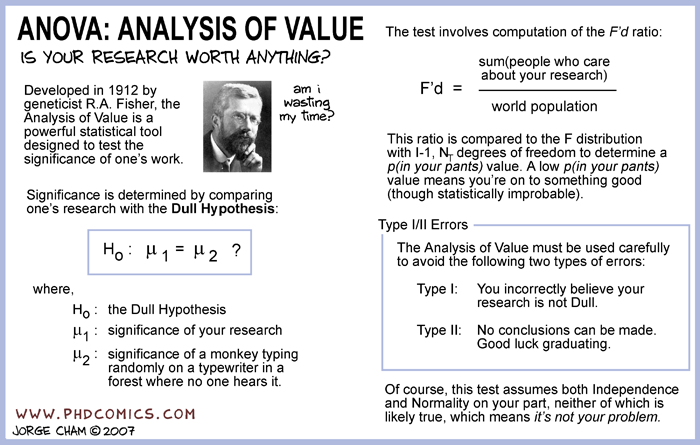

Figure 1.6: Piled higher and deeper
with \(P_{\theta^{*}} \in \mathcal{P}\) being the distribution of \(\mathbf{X}\).
Let \(\Theta_0\) and \(\Theta_1\) be disjoint partition of \(\Theta\), i.e., \(\Theta_0 \cup \Theta_1 = \Theta\) and \(\Theta_0 \cap \Theta_1 = \emptyset\). We will call \(\Theta_0\) as the null hypothesis and \(\Theta_1\) as the alternative hypothesis.
The problem of hypothesis testing correspond to the problem of asking whether \(P_{\theta^{*}} \in \mathcal{P}_0 = \{ P_{\theta} \colon \theta \in \Theta_0 \}\) or that \(P_{\theta^{*}} \in \mathcal{P}_{1} = \{P_{\theta} \colon \theta \in \Theta_1 \}\). That is \[ H_0 \colon \theta^{*} \in \Theta_0 \quad \text{versus} \quad H_1 \colon \theta^{*} \in \Theta_1 \] A hypothesis (null or alternative) is simple if it specifies a single distribution, e.g., \(\Theta_0\) is simple if \(|\mathcal{P}_0| = 1\), and composite otherwise. If \(\Theta\) has an order relation, then we can refer to “one-sided” or “two-sided” hypothesis.
For example, let \(\mathbf{X}\) be a sequence of head/tail observations when flipping a coin \(100\) times. Then a possible statistical model for \(\mathbf{X}\) is \(\mathcal{P} = \{ \mathrm{Binomial}(100, p) \colon p \in (0,1) \}\) with \(\Theta = (0,1)\). Consider the following partitions of \(\Theta\) \[\begin{gather*} \Theta_0 = \{0.5\}; \quad \Theta_1 = \{ \theta \not = 0.5 \} \tag{a} \\ \Theta_0 = \{\theta \leq 0.5 \}; \quad \Theta_1 = \{\theta > 0.5\} \tag{b}\\ \Theta_0 = \{\theta \geq 0.5 \}; \quad \Theta_1 = \{\theta < 0.5 \} \tag{c} \\ \Theta_0 = \{ 0.3 \leq \theta \leq 0.7 \}; \quad \Theta_1 = \{ \theta < 0.3 \vee \theta > 0.7 \} \tag{d} \end{gather*}\]Then in (a), \(\Theta_0\) is simple and \(\Theta_1\) is composite. (a) is also an example of a “two-sided” test. In (b), both hypothesis are composite. (b) and (c) are examples of a “one-sided” test. (d) is an example of a general “two-sided” test.
Another possible statistical model for \(\mathbf{X}\) is \(\mathcal{P} = \{ \mathrm{Binomial}(100,p) \colon p \in \Theta \}\) with \(\Theta = \{0.3, 0.7\}\). Then \(\Theta_0 = \{0.3\}\) and \(\Theta_1 = \{0.7\}\) are both simple “hypothesis”.
A rejection region is a subset \(C\) of the observation space for which we will reject the null hypothesis \(H_0\) if our observation \(\mathbf{X}\) lies in \(C\). For example, if \(\mathbf{X} = \{X_1, X_2, \dots, X_n\}\) and each of the \(X_i \in \{0,1\}\) then the rejection region is a subset of \(\{0,1\}^{n}\). Similarly, if \(X_i \in \mathbb{R}\) then the rejection region is a subset of \(\mathbb{R}^{n}\).
| Action | \(H_0\) is true | \(H_0\) is false |
|---|---|---|
| Reject \(H_0\) | Type-I error | No error |
| Fail to reject \(H_0\) | No error | Type-II error |
The two-type of errors are not equivalent. The distinguishing feature of hypothesis testing is the manner in which it addresses the trade-off between Type-I error and Type-II error. Under the Neyman-Pearson formulation of hypothesis testing, the null hypothesis is given a privileged status, i.e., \(H_0\) is maintained unless there is compelling evidence against it. Under the Neyman-Pearson formulation, the significance level of a test is the upper bound on the maximum Type-I error of the test and the power of a test is one minus the Type-II error of the test.
Many of the hypothesis testing problem in this course is concerned with a “two-sided” test or a “one-sided” test with the null hypothesis being a simple hypothesis.
A test statistic \(T(\mathbf{X})\) is a random variable (a function of the observed data) whose values are used to decide between the null and the alternative hypothesis. Associated with a test statistic is a partition \(C_0\) and \(C_1\) of \(\mathbb{R}\) such that if \(T(\mathbf{X}) \in C_1\) then we “reject” \(H_0\) and if \(T(\mathbf{X}) \in C_0\) then we “fail to reject” \(H_0\).
For simplicity, we often formulate the test statistic \(T(\mathbf{X})\) so that
For example, let \(\mathbf{X}\) be \(n\) throw of a coin. Let \(\mathcal{P} = \{ \mathrm{Binomial}(n, p) \}\) be the statistical model and let \(T(\mathbf{X}) = \frac{\text{\# of "H" in the sequence $\mathbf{X}$}}{\text{length of $\mathbf{X}$}}\) be the test statistic.
Then in general, \(T(\mathbf{X})\) is “large”" when we reject \(H_0 \colon p \leq 0.5\) in favor of \(H_1 \colon p >= 0.5\) and \(T(\mathbf{X})\) is “far away” from \(0.3\) when we reject \(H_0 \colon p = 0.3\) in favor of \(H_1 \colon p \not = 0.3\).
The \(p\)-value corresponding to an observed \(T(\mathbf{X}) = t_{\mathrm{obs}}\) is then the probability (under the null-hypothesis) that \(T(\mathbf{X}')\) is “at least as extreme” as \(t_{\mathrm{obs}}\) where \(\mathbf{X}'\) is an independent replication of \(\mathbf{X}\). An exact definition of \(p\)-values is quite tricky (Schervish 1996Schervish, M. J. 1996. “(P)-Values: What They Are and What They Are Not.” The American Statistician 50: 203–6. https://doi.org/10.1080/00031305.1996.10474380.).
For more on \(p\)-values, see also the articles Gigerenzer (2004Gigerenzer, G. 2004. “Mindless Statistics.” The Journal of Socio-Economics 33: 587–606. https://doi.org/10.1016/j.socec.2004.09.033.) and Hoekstra et al. (2014Hoekstra, R., R. D. Morey, J. N. Rouder, and E. J. Wagenmakers. 2014. “Robust Misintepretation of Confidence Intervals.” Psychonomic Bulletin and Review 21: 1157–64. https://doi.org/10.3758/s13423-013-0572-3.).